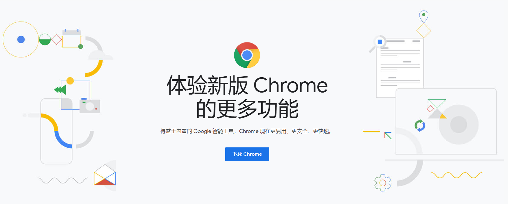

「馨客栈分享」谷歌浏览器使用技巧
首先声明一下：下面列出来的所有软件都是我在用的哈
如果你有更好的软件分享，可以找我，我觉得可以会分享到这里的哈
文章更新时间： 2019-08-16
Google Chrome

常用快捷键
谷歌浏览器常用快捷键
| 快捷键 | 说明 |
| F12 | 进入开发者模式 |
| Ctrl+D | 将页面添加到书签 |
| Ctrl+Tab | 从左到右，标签循环浏览 |
| Ctrl+Shift+Tab | 从右到左，标签循环浏览 |
| Ctrl+1-8 | 指的是1-8的标签 |
| Ctrl+9 | 指到最后一个标签 |
| Ctrl+Shift+Del | 打开【清除浏览数据】窗口 |
| Ctrl+Shift+B | 显示/隐藏书签栏 |
| Alt+D/Ctrl+L | 快速将光标指到地址栏 |
| 输入站点名称+ Ctrl + Enter | 添加www.并添加.com到站点名称 |
| 输入搜索字词+ Alt + Enter | 打开新标签页并执行搜索 |
| Alt+Home | 在当前标签打开首页 |
| Ctrl+Shift+T | 重新打开最近关闭的一个标签 |
| Ctrl++ | 放大页面 |
| Ctrl-- | 缩小页面 |
| Ctrl+0（数字0） | 重置页面比例 |
| Ctrl + K或Ctrl + E | 从页面上的任何位置搜索 |
| Shift + Delete | 从地址栏中删除预测 |
| Ctrl+U | 新开一个标签页来查看源代码 |
| Ctrl+W | 关闭当前标签页面 |
Google Chrome指令
下面的指令直接复制在地址栏回车即可
扩展程序
主要介绍常用的扩展程序